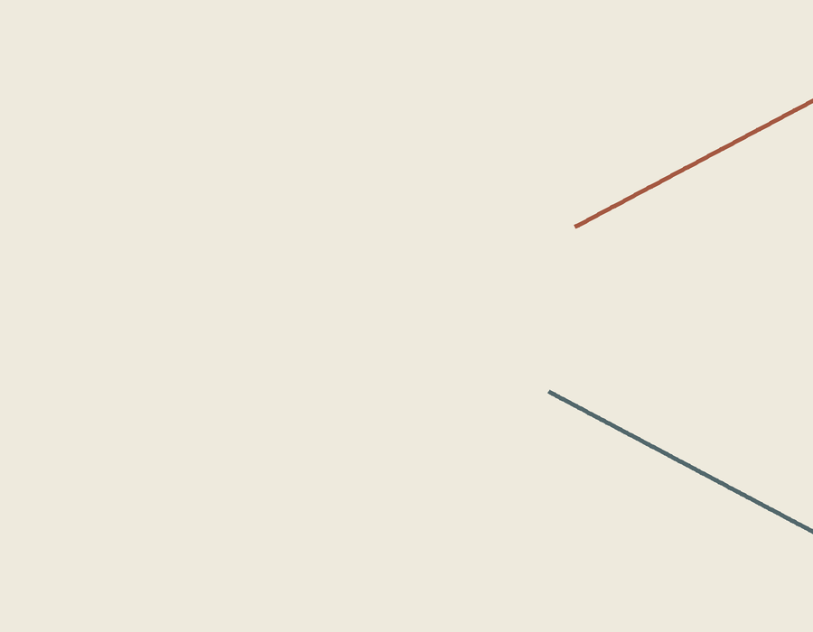

Gap at Contact
Two paths cross. At the meeting, a small interval interrupts one line while the other continues through.

This abstract digital drawing is an invented motion study. Its formal question arose while reading about traditional cumbia of Colombia's Caribbean region; it does not depict cumbia steps, instruments, or a shared dance. The inheritance note records the reading and its limits.